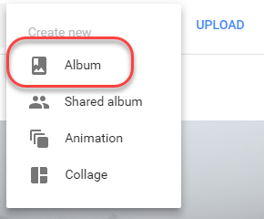

Due to a change in the Google Photos services, there are some cases where Open Live Writer can't automatically configure image publishing.
This one-time fix will set it up for you, after which you can publish images from Open Live Writer normally.
Go to http://photos.google.com
Click on Create
Click Album

Select any picture when you're presented with a list of pictures, then click Create in the top right
Call the album "Open Live Writer", then click the tick in the top left.